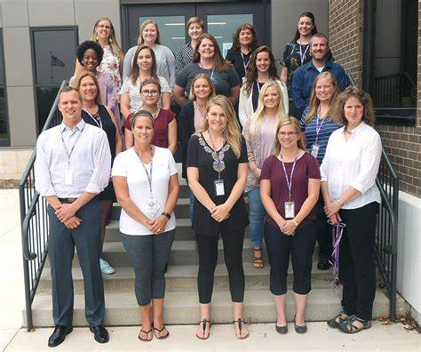

Click me to change my text!
Staff meetings take place first Friday of each month at 8:00PM in the conference room. Attendence is required for all staff!
News
Cantor College recently hosted the Software Engineering student of the year awards. Short listed candidates from around the country attended the one day event.
Academic Registry
For academic regulations, assessment, awards, student records and course validation.
Catering Services
Contact the Catering Services regarding on and off-site catering.
Financial Services
The financial team based on the 2nd Floor are responsible for all areas of student finance as well as College budgeting.
Information Systems Services
The ISS team delivers the College’s computing facilities including all hardware and software. They also run the staff helpdesk.
Marketing Services
The Marketing Team will help promote events and new courses. They will help with press release preparation.
Personnel Services
All staff pay and conditions enquiries should be directed to the Personnel Services team on the 3rd floor.
Facilities
The facilities are responsible for the general care and maintenance of the College. All enquiries via the main helpdesk.
Cantor college has not only many design courses, but we also have many societies which will allow you to take part in animation, Fashion and graphic design.
Office hours are from 9:00AM to 5:00PM Monday to Friday. Staff members are required to be available during these hours for learning support! :)